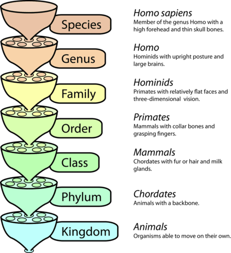

Class 3: Booleans, Dictionaries, and Mammalian Diet#
EEB 125, W2025#
Tomo Parins-Fukuchi#
Concepts and tools#
Dictionaries
List comprehensions
Cleaning data and finding patterns
Some more techniques/tools in Python#
Dictionaries#
Another type of useful Python container is called a ‘dictionary’
They are specified using curly brackets:
{}Each dictionary contains a ‘key’ and a ‘value’. Let’s explore:
# create an empty dictionary and assign it to a variable
test_dict = {}
print(test_dict)
# create an entry in our new dictionary:
test_dict["test_key"] = "test_value"
print(test_dict)
# we can use the key to access the value:
print(test_dict["test_key"])
Dictionaries#
Keys and values can be almost any data type
Keys have some restrictions on data type, but strings, floats, etc, all are fine (more later)
# ex. 1. what data type are these keys? the values?
test_dic = {"a" : [1.3,2.2], "b" : [4.3]}
print(test_dic["a"])
# ex. 2. what data type are these keys? the values?
test_dic = {0 : ["a","b"], 1 : ["c"]}
print(test_dic[0])
# ex. 3. what data type are these keys? the values?
test_dic = {0 : ["a","b"], "z" : ["c"]}
print(test_dic["z"])
# dictionaries offer a lot of flexibility
test_dic[0].append("d")
print(test_dic[0])
# we can also loop over a dictionary
testd = {"21" : "ia>iw", "kendrick" : "gkmc","weezy":"tc3"}
for mc in testd:
key = mc
value = testd[mc]
print(key,value)
List comprehensions#
Python offers another way of iterating through data that can be handy
It is similar to a for loop, but stated more compactly
# count from zero to nine using a for loop and store the results in a list
zero_to_nine = []
for i in range(10):
zero_to_nine.append(i)
print(zero_to_nine)
# the same thing using a list comprehension
zero_to_nine = [i for i in range(10)]
print(zero_to_nine)
List comprehensions#
We can use these to create slightly modified versions of existing lists
emcees_str = "cole, rocky, 21, weezy, kendrick"
emcees_ls = emcees_str.split(",")
# we can use a list comprehension to generate a cleaner version of emcees_ls
emcees_ls_cln = [mc.strip().upper() for mc in emcees_ls]
print(emcees_ls_cln)
A brief aside#

A brief aside#

Which Canadian province has the most fossils?#
We can use list comprehensions to clean up the results we arrived at last week.
file = open("pbdb_data.csv")
file
lines = file.readlines()
header = lines[0]
data = lines[1:]
## review from last week
province_ls = ["Ontario","British Columbia","Alberta","Saskatchewan","Manitoba","Newfoundland and Labrador","Northwest Territories","Yukon","Prince Edward Island","Nunavut"]
province_recs = []
for line in data:
line_dat = line.strip().split(",")
province = line_dat[-1].strip()
province_recs.append(province)
# RESULTS FROM LAST WEEK
for i in province_ls:
print(i,province_recs.count(i))
Finding unique values#
We might want to pick out the unique values in a data column
We don’t always know what categories our data is divided into
Python
setdoes this naturally
Python set data structure#
A
setis a native data container (alistis another)No duplicates
We can use it to find the unique values within our data
genres = ["black metal","rap","rap","country","black metal","rap"]
print(genres)
print(set(genres))
# Notice a few of these seem to just be different in caps (e.g., "British columbia")
unique = set(province_recs)
print(unique)
province_ls_uc = [prov.upper() for prov in province_ls]
province_recs_uc = [prov.upper() for prov in province_recs]
for i in province_ls_uc:
print(i,province_recs_uc.count(i))
How many taxa are found in the fossil records of each province?#
We can use these new tools to ask another data science question: which Canadian province (or territory) has the most diverse fossil record?
Species richness#
Many questions in ecology and evolution start by asking how many species exist in a particular area
Fossils are often difficult to identify to the species level
We can use ‘taxon’ richness– could be species or could be higher taxonomic categories
Linnaean taxonomy#
Our ‘taxon richness’ metric could include any of these levels

print(header)
Lists as dictionary values#
We can create a dictionary to store all of the taxa found in each province
Start by creating an empty dictionary and fill it up
unique province records as keys
empty list as values
prov_tax = {}
for prov in unique:
upperprov = prov.upper()
prov_tax[upperprov] = []
Populate dictionary#
Loop over the lines of our data file
For each line, add the taxon name to the list associated with the province
for line in lines[1:]:
line_dat = line.strip().split(",")
prov = line_dat[-1].upper().strip()
tax = line_dat[3]
prov_tax[prov].append(tax)
Calculate taxon richness for each province#
Look up the provinces in our dictionary,
prov_taxCount the number of taxa associated with each one
print("province,num_taxa")
for prov in province_ls_uc: # why iterate over province_ls_uc instead of prov_tax?
tax_ls = prov_tax[prov]
unique_tax = set(tax_ls)
num_tax = len(unique_tax)
print(f"{prov},{num_tax}")
Switching gears#
Now, we will introduce a different data set and explore some more questions using some new concepts
But first, a break
Trophic levels#
Sort of an oversimplification
But generally answers “does it eat plants†vs “does it eat herbivores†vs “does it eat carnivores”
There are no primary producers among mammals (or any other animal)
Trophic levels in Mammals#
We will now explore a new data science question:
What is the distribution of trophic levels in different mammalian taxa?
Will explain this more as we go
file = open("trophic_level.csv")
lines = file.readlines()
header = lines[0]
data = lines[1:]
print(header)
print(lines[1])
# lets try to see what levels are in this dataset
levels = []
for line in data:
dat = line.strip().split(",")
level = dat[-1]
levels.append(level)
What do you suppose these mean?
unique = set(levels)
print(unique)
Trophic level#
Trophic level of each species measured using any qualitative or quantitative dietary measure, over any period of time, using any assessment method, for non-captive or non-provisioned populations; adult or age unspecified individuals, male, female, or sex unspecified individuals; primary, secondary, or extrapolated sources; all measures of central tendency; in all localities. Species were defined as (1) herbivore (not vertebrate and/or invertebrate), (2) omnivore (vertebrate and/or invertebrate plus any of the other categories) and (3) carnivore (vertebrate and/or invertebrate only)
Do bats or Carnivorans have more meat-eaters?#
Let’s shift to ask a more targetted question
Do bats have fewer or more meat-eating species than Carnivorans (dogs, cats, etc)?
How might we begin to approach this question??
# Q: how can we check how many rows there are in the dataset?
Selecting Rows using a Condition#
Okay, so we have a lot of rows to deal with. Sorting through manually would be impossible
We can select rows we want using Boolean logic
George Boole#
Self-taught mathematician from the 19th century
Pioneered (what we now call) Boolean algebra
System of algebra/logic using variables of
TrueandFalserather than numbersAbsolutely fundamental concept for the computational sciences

Boolean variables#
Is a condition
TrueorFalse?Python has notation for checking this:
a == b-> “a is equal to b”a != b-> “a is not equal to b”
# We can compare numeric values:
1 == 1
# We can compare numeric values:
1 != 1
# We can compare numeric values:
1 == 2
# We can compare numeric values:
1 != 2
# We can also compare strings:
"star wars" == "star trek"
# We can also compare strings:
"star wars" != "star trek"
Booleans#
Booleans are another native data type in Python
type(True)
Using Booleans to extract data#
We can find the rows that correspond to each of our orders using Boolean logic
Find rows that return
Truewhen theordervariable is equal to (e.g.) BatsCan use
ifkeyword in Python:
have_code_problems = False
if have_code_problems == True:
print("i feel bad for ya son")
elif have_code_problems == False:
print("noice")
Using Booleans to extract data#
Can use
ifstatements to compare many types of data
prof = "KP"
if prof == "KP":
print("wow, the semester is flying by!!!")
elif prof == "michael":
print("i'm so glad that midterm is over, phew")
else:
print("we must still be stuck with tomo...")
Preparing#
First, let’s find out how many species belong to each of our orders of interest
Loop through our data and simply count how many records correspond to each
n_bats = 0
n_carn = 0
for line in data:
line_dat = line.strip().split(",")
order = line_dat[0]
if order == "Chiroptera":
n_bats = n_bats + 1
elif order == "Carnivora":
n_carn = n_carn + 1
print("chiroptera:",n_bats)
print("carnivora:",n_carn)
Which bats eat meat? Which Carnivorans do?#
We can hone in on our focal question by just adding one more Boolean:
bats_meat = 0
carn_meat = 0
for line in data:
line_dat = line.strip().split(",")
order = line_dat[0]
troph = line_dat[2]
if order == "Chiroptera":
if troph == "3":
bats_meat = bats_meat + 1
elif order == "Carnivora":
if troph == "3":
carn_meat = carn_meat + 1
print("chiroptera:",bats_meat)
print("carnivora:",carn_meat)
Which bats eat meat? Which Carnivorans do?#
We can hone in on our focal question by just adding one more Boolean
We can make this a little easier on the eyes by combining Booleans:
bats_meat = 0
carn_meat = 0
for line in data:
line_dat = line.strip().split(",")
order = line_dat[0]
troph = line_dat[2]
if order == "Chiroptera" and troph == "3":
bats_meat = bats_meat + 1
elif order == "Carnivora" and troph == "3":
carn_meat = carn_meat + 1
print("chiroptera:",bats_meat)
print("carnivora:",carn_meat)
What proportion of each eats meat?#
prop_bats_meat = bats_meat / n_bats
prop_carn_meat = carn_meat / n_carn
print("chiroptera:",prop_bats_meat)
print("carnivora:",prop_carn_meat)
BUT WAIT#
Missing data#
Often times, our observations may be incomplete
These lead to ‘missing data’
One common way of representing missing data is by writing ‘NA’
# what can we do with these 'NA' things!??!
unique = set(levels)
print(unique)
Missing data#
In our loop, if we encounter a line where tropic_level is “NA”, tell Python to skip to the next line
Can use the
continuekeyword for this:
for i in range(5):
if i == 2:
continue
print(i)
Missing data#
In our loop, if we encounter a line where tropic_level is “NA”, tell Python to skip to the next line
Can use the
continuekeyword for this:
n_bats = 0
n_carn = 0
for line in data:
line_dat = line.strip().split(",")
order = line_dat[0]
troph = line_dat[2]
if troph == "NA":
continue # if the trophic level in the dataset is missing, skip to the next line without counting
if order == "Chiroptera":
n_bats = n_bats + 1
elif order == "Carnivora":
n_carn = n_carn + 1
print("chiroptera:",n_bats)
print("carnivora:",n_carn)
prop_bats_meat = bats_meat / n_bats
prop_carn_meat = carn_meat / n_carn
print("chiroptera:",prop_bats_meat)
print("carnivora:",prop_carn_meat)
BUT WAIT#
Trophic level#
Trophic level of each species measured using any qualitative or quantitative dietary measure, over any period of time, using any assessment method, for non-captive or non-provisioned populations; adult or age unspecified individuals, male, female, or sex unspecified individuals; primary, secondary, or extrapolated sources; all measures of central tendency; in all localities. Species were defined as (1) herbivore (not vertebrate and/or invertebrate), (2) omnivore (vertebrate and/or invertebrate plus any of the other categories) and (3) carnivore (vertebrate and/or invertebrate only)
Trophic level#
Maybe we want to consider anything at either levels 2 or 3 as meat-eating…
Expanding our Boolean toolkit#
We can use the greater than (
>) operator to accomplish this
10 > 1
10 >= 10
10 < 1
Expanding our Boolean toolkit#
Identify any species where trophic level is
>=2 as a meat-eater
bats_meat = 0
carn_meat = 0
for line in data:
line_dat = line.strip().split(",")
order = line_dat[0]
troph = line_dat[2]
if troph == "NA":
continue # if the trophic level in the dataset is missing, skip to the next line without counting
troph_int = int(troph)
if order == "Chiroptera" and troph_int >= 2:
bats_meat = bats_meat + 1
elif order == "Carnivora" and troph_int >= 2:
carn_meat = carn_meat + 1
print("chiroptera:",bats_meat)
print("carnivora:",carn_meat)
prop_bats_meat = bats_meat / n_bats
prop_carn_meat = carn_meat / n_carn
print("chiroptera:",prop_bats_meat)
print("carnivora:",prop_carn_meat)